O que é um produto?
É toda mercadoria colocada à venda. Aperte no topico que deseja para conhecer a funcionalidade de cada opção.
+Procedimentos para cadastrar um produto:
- Para que o sistema gere um código sequencial (automático), clique na lâmpada amarela

- Você pode, se desejar, informar/digitar o seu código de controle. Caso este código não esteja utilizado, o sistema permitirá o cadastro.
- Informe todos os campos pertinentes ao produto e tecle F10 para salvar o cadastro.
No Sistema:
Clique no ícone  ou pressione F3 :
ou pressione F3 :
OBS.: As informações sobre cada campo estão no final da página.
+Como alterar os dados de um produto?
Pressione F3 e digite o código do produto já cadastrado. Caso não saiba o código, clique em consulta (F6).
A pesquisa poderá ser realizada através da descrição (nome), do código de barras, princípio ativo, registro MS do produto. Encontrado o produto, faça as alterações desejadas e clique em Salvar (F10).
+É possível excluir os produtos?
Sim, mas deve-se atentar aos seguintes detalhes:
Se existir movimentação (venda/nota fiscal de saída) vinculada a este produto, a exclusão não será permitida.
+Descrição dos campos de cadastro de produto:
- Código: Gerado automaticamente pelo sistema ou pode ser informado manualmente.
- Descrição: Informe a descrição do produto.
***Obs: Com dois cliques no campo descrição, abre uma tela de busca para medicamentos da ABC Farma, pesquise pelo código de barras e depois clique em copiar dados para tela de cadastro. (Para utilizar esse recurso é necessário que a lista de medicamentos esteja atualizada) - Princípio ativo: Informe o princípio ativo do produto.
- Código de barras: Informe o código de barras do produto.
- Registro MS: Informe o registro MS do produto.
- Msg da venda:Informe uma observação, que irá aparecer na hora da venda.
- Obs do pedido: Informe uma observação, que irá aparecer no pedido.
- UN venda inteira: Informe o formato de unidade em que o produto vai ser vendido. Ex: CX, UN.
- Qtde de apresentação: Informe a quantidade de comprimidos, doses ou ml do produto.
***Obs: Para produtos com venda pelo farmácia popular é obrigatório o preenchimento desse campo. - Venda em fração: Caso o produto seja fracionado, informe a quantidade de fração do produto.
*** Ex: Anador 500 mg 1 Caixa com 60 unidades. Venda em fração 1/60.
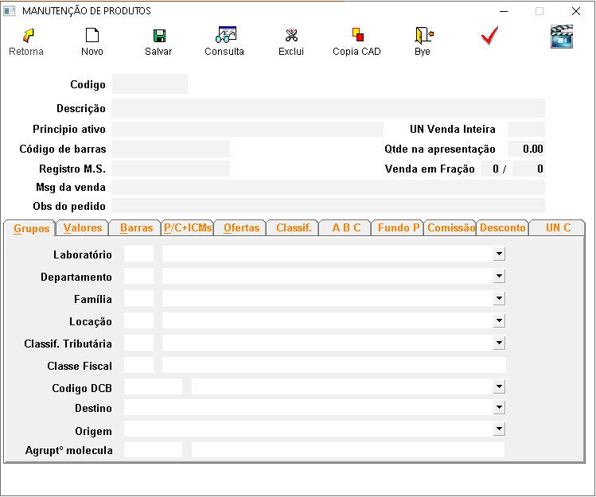
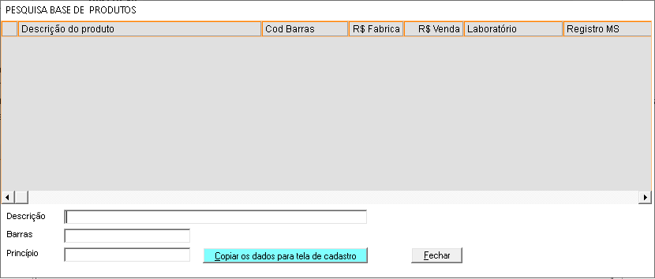
+Aba grupos:
- Laboratório: Informe o laboratório do produto.
- Departamento: Informe o departamento do produto.
- Família: Informe a família do produto.
- Locação: Informe a locação do produto.
- Classif. Tributária: Informe a alíquota de ICMS, substituição tributária ou isento, conforme o produto é vendido no estado.
- Classe fiscal: Informe a classe fiscal (NCM).
- Código DCB: Informe o código DCB para os produtos controlados.
- Destino: Informe a que se destina o produto.
- Origem: Informe a origem do produto.
- Agrup. molécula: Selecione qual produto será agrupado na molécula.
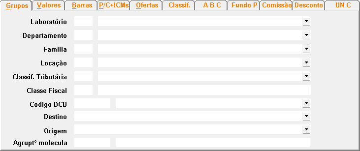
+Aba valores:
- Custo médio: Cálculo realizado pelo sistema da seguinte forma, preço da compra dividido pela quantidade de vezes que comprou o produto.
- Preço de fábrica: Informe o preço de fábrica do produto, caso não tenha na nota pode ser colocado preço da primeira nota de entrada.
- Preço de venda: Informe o preço de venda do produto.
*** Obs: Se o produto for fracionado informe o preço do total e não o da fração. - Preço de promoção: Informe o preço de promoção do produto.
*** Obs: Para produtos do farmácia popular, o preço de promoção será o valor pago pelo governo, caso o produto seja pago parcialmente deixe o valor integral. - Desconto: Informe o desconto em porcentagem do produto.
- M.V.A: Informe a margem de valor agregado para produtos liberados, quando o produto for monitorado o preço o M.V.A. será de acordo com a lista PNN (positivos, negativo e neutros).
- Lista PNN: Informe em que classificação da lista PNN o produto se encontra.
- Estoque mínimo: Informe estoque mínimo desse produto, utilizado em pedidos de compra.
- Estoque múltiplo: Caso o fornecedor venda o produto apenas em quantidade fixa, defina essa quantidade em estoque múltiplo.
*** Ex: O produto é vendido em quantidades de 10 unidade, no pedido eletrônico ele irá arredondar para múltiplos de 10. - Lote econômico: Usado para produtos que na compra de uma quantidade maior tenha descontos.
*** Ex: Na compra de um produto o preço sai a 2 reais, na compra de 10 produtos cada um sai a 1 real. - Tabloide: Exibe informações sobre esse produto quando ele está cadastrado em algum tabloide ativo.
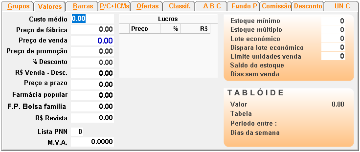
+Aba Barras:
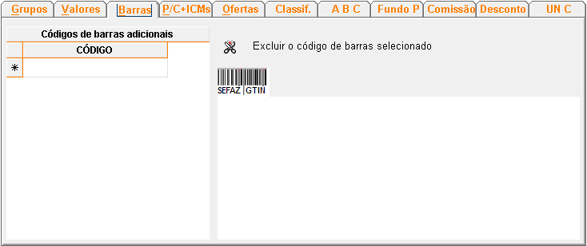
Informe quando o produto possuir mais de um código de barras.
Ex.: Na caixa do produto veio um código de barras, porém no seu cadastro ele está com outro.
+Aba Pis/Cofins:
- Cst Pis/Cofins: Informe o código de situação tributária referente ao pis e cofins.
- %PIS: Informe a porcentagem de pis referente ao CST informado.
- %CONFINS: Informe a porcentagem de cofins referente ao CST informado.
- Médio de imposto: Informe o percentual médio de imposto de cada produto (Referência o NCM).
- Consulta produto na base do SORTEE: Ferramenta da SORTEE que calcula os impostos de Pis/Cofins e atualiza a classe fiscal e o NCM de cada produto.
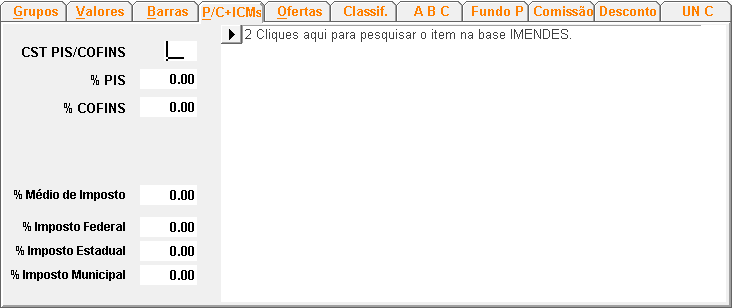
+Aba Ofertas/trocas:
- Código: Informe o código do produto (ou F6 consulta) do produto a ser ofertado.
- Descrição: Descrição do produto a ser ofertado.
- Quantidade: Informe a quantidade a ser ofertada.
- Função: Informe nesse campo oferta.
- Código: Informe o código do produto (ou F6 consulta) do produto a ser trocado.
- Descrição: Descrição do produto a ser trocado.
- Quantidade: Informe a quantidade a ser trocado.
- Função: Informe nesse campo troca.
- Código: Informe o código do produto ou F6 para consultar o produto a ser ofertado.
- Descrição: Descrição do produto a ser ofertado.
- Quantidade: Informe a quantidade a ser ofertada.
- Função: Informe nesse campo brinde.
- Quantas unidades vendidas: Na compra de quantos produtos para ganhar o brinde.
- Valor da venda: Informe o valor que vai custar o brinde. Obs: O valor do brinde não pode ser zerado, informe pelo menos 0,01 centavos.
- Múltiplo: Quando selecionada essa opção o sistema multiplica os brindes.
*** Ex: Na compra de 3 unidades o cliente leva mais 1, na compra de 6 unidades o cliente leva mais 2.
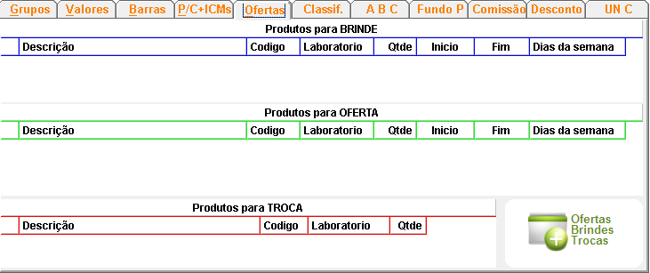
Cadastrar Ofertas/Brindes/Trocas
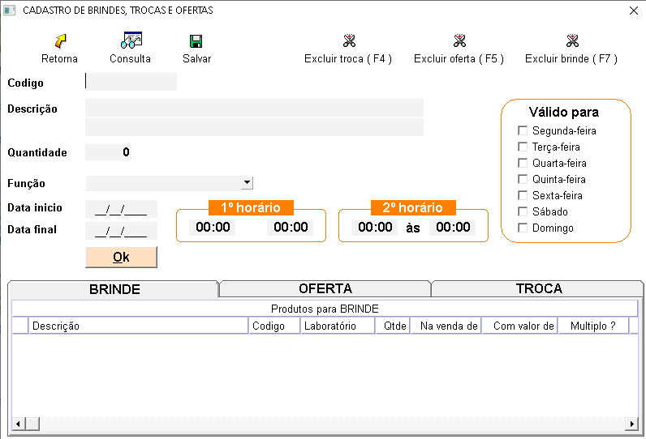
Ofertas:
Usado para ofertar um produto mais barato, ou para agregar mais produtos na venda.
*** Ex: Na compra de 1 pacote de fralda, ofereça um lenço umedecido.
Para cadastrar clique no botão Cadastrar ofertas/trocas/brindes.
Troca:
Usado para trocar um produto quando não se tem em estoque, para oferecer um produto com pouco giro de estoque ou perto do vencimento.
*** Ex: Troca de uma fralda da turma da Mônica, por uma similar que está perto de vencer.
Para cadastrar clique no botão Cadastrar ofertas/trocas/brindes.
Brinde:
Usado para dar um brinde ao cliente.
*** Ex: Na compra de 3 pacotes de fralda, o terceiro sai de graça.
Para cadastrar clique no botão Cadastrar ofertas/trocas/brindes.
+Aba Classificação:
- Ativo: Informe se o produto está ativo.
- R$ monitorado: Informe se o produto tem o preço monitorado pelo governo.
- Atualiza preço: Informe se o produto vai aparecer na lista para atualizar o preço. Desde que tenha um código de barras válido.
- Gratuidade no farmácia popular: Informe se o produto é vendido pelo farmácia popular.
- Compõe pedido de compra: Informe se esse produto vai entrar em pedidos de compras.
- PBM: Informe se o produto pertence a algum PBM.
- Uso contínuo: Informe se o medicamento é de uso contínuo.
- Exige CRM: Informe se o produto vai exigir CRM na hora da venda.
- Genérico: Informe se o medicamento é genérico.
- SNGPC: Informe se o produto é antibiótico ou psicotrópico.
- Exportar para close-up: Informe se o produto vai exportar dados para close-up.
- Exige informar a duração do tratamento na venda: Selecione se o produto exige a quantidade e dias de tratamento.
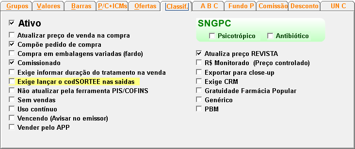
+Aba Curva ABC:
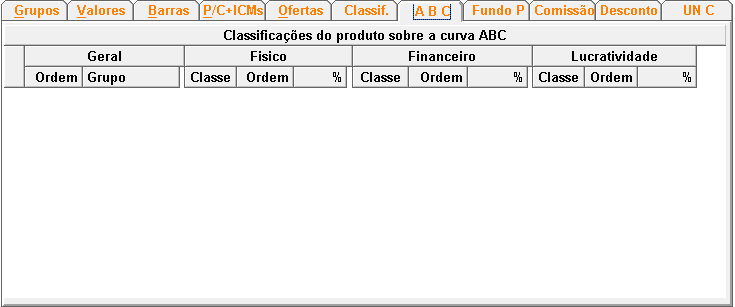
Mostra a classificação do produto na curva ABC analisando o físico, financeiro e a lucratividade.
+Fundo P:
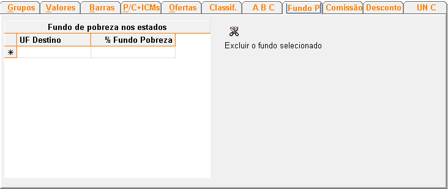
O fundo de pobreza é um tributo adicional, similar a um imposto, que é cobrado sobre a comercialização de certos produtos ou serviços. Esse valor arrecadado é utilizado pelo governo para financiar programas e iniciativas que visam a redução da pobreza e a melhoria das condições de vida das populações mais vulneráveis.
+Comissão:
- % Comissão: Percentual de comissão que será aplicada.
- Até: Valor limite até o qual o percentual de comissão será válido.
- % Desconto: Percentual de desconto aplicado.
- Comissão por Unidade Vendida: que especifica o valor da comissão paga por cada unidade do produto vendida. Este valor está atualmente configurado como 0.00 R$, indicando que, no momento, não há comissão definida por unidade.
- Acumula: Pontos acumulados por unidade vendida.
- Vale: Pontos necessários para resgate na venda.
- Valor de venda no resgate: Valor monetário correspondente ao resgate dos pontos.
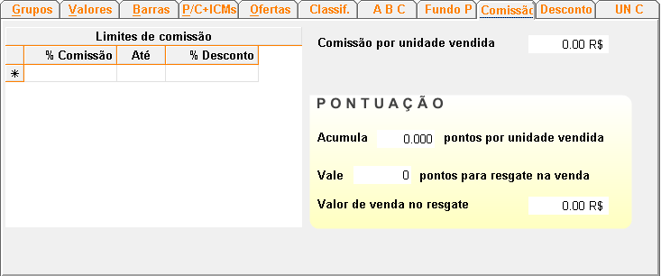
Limites de Comissão
Pontuação:
+Desconto:
- Definir um percentual de desconto.
- Aplicar um desconto adicional.
- Estabelecer um preço unitário fixo após o desconto.
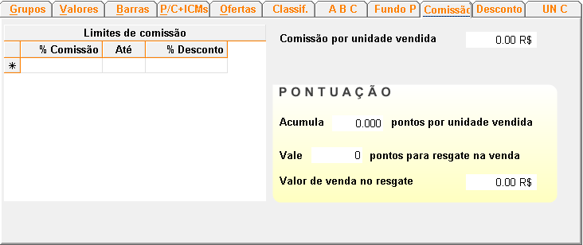
A tabela de desconto progressivo permite ao administrador do sistema configurar descontos escalonados baseados em quantidades compradas. As opções incluem:
Além disso, as datas de início e validade garantem que os descontos sejam aplicados somente durante o período desejado. Isso facilita a criação de promoções e incentivos de compra para clientes que adquirirem grandes quantidades de um produto específico.
+UN C:
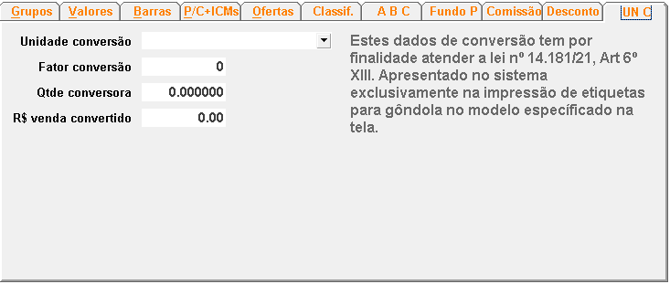
A aba UN C é essencial para garantir a conformidade legal e facilitar a clareza das informações apresentadas ao consumidor nas etiquetas de preços. Ao definir corretamente os fatores de conversão e as unidades de medida, o sistema assegura que os preços e as quantidades exibidas nas gôndolas sejam precisas e fáceis de entender.